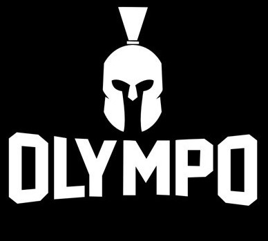

Bienvenido al OLYMPO
Todos alguna vez fuimos principiantes y sentimos que no progresábamos. Acá tenés las herramientas básicas para entrenar con números: cuánto comer, cómo viene tu composición corporal y cuánta fuerza tenés.
Tres calculadoras, cero vueltas
Todo se calcula en tu navegador. No hay registro y no se guarda ningún dato.
Calorías
Tu gasto diario y cuánto comer para definir, mantener o hacer volumen, con la proteína que necesitás en cada etapa.
Calcular →Grasa corporal
Estimá tu porcentaje de grasa con una cinta métrica, usando el método de la Marina de EE. UU.
Calcular →1RM
Tu repetición máxima con 7 fórmulas distintas, y qué peso usar según cuántas repeticiones quieras hacer.
Calcular →Si recién arrancás
-
Elegí tu objetivo
Definir, mantener o ganar músculo. La calculadora de calorías te dice cuánto comer para cada uno.
-
Medite
La balanza no lo dice todo. Anotá tu porcentaje de grasa cada 4 semanas y mirá la tendencia.
-
Progresá de a poco
Con tu 1RM sabés qué peso usar en cada serie. Subí la carga cuando completes todas las repeticiones.